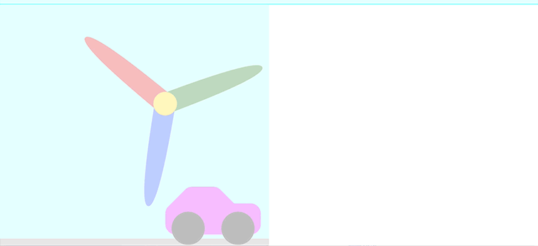
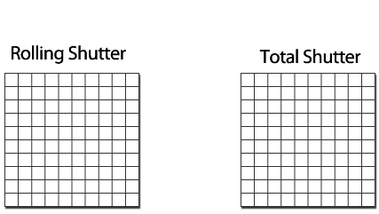

Rolling Shutter 和 Global shutter的比較

封面圖片來源：The Beat
以下資訊皆是本人參考網路上資訊整理出來的，如有錯誤的地方還請不吝給予指教
目錄
快門是照相機用來控制感光片有效曝光時間的結構
對於曝光模式，Global Shutter與Rolling Shutter是相機常見的曝光模式，下面介紹兩種不同模式的特點：
關於Rolling Shutter和Global Shutter之間的區別，兩者在最終圖像結果方面是不同的，尤其是在相機處於運動狀態時
捲簾快門
Rolling Shutter
Rolling shutter是通過逐行曝光的方式實現的。曝光會是一行一行的輸出，在開始曝光時，Sensor會以逐行掃描的方式逐行曝光，不同行的像素曝光時間會不同。
感光元件的所有像素點逐行輪流曝光一定時間，進而成像。但會出現果凍現象
果凍現象是在高速運動後曝光而產生殘缺的影像及扭曲變形彎曲(如下圖)
會發生果凍現象，通常是當拍攝的物體、場景中有快速移動的物件。EX:飛機螺旋槳、高速的車輛等

圖片來源: Wiki
回到目錄
全局快門
Global Shutter
Global Shutter是感光元件的所有像素點同時曝光，進而成像。因此不會Rolling Shutter的果凍現象，曝光時間會比Rolling Shutter還短
以下為Rolling shutter和Global Shutter的對比圖：

圖片來源: internet
左圖是Rolling shutter的曝光方式，逐行掃描。右圖是Global Shutter的曝光方式，所有像素點一起曝光。
因此，
-
在高速的環境下運動的物體，使用Global Shutter就不會變形
-
在光線有明暗變化的時候，使用Global shutter sensor不會有明暗瑕疵，可以做到單幀HDR。
回到目錄
全局快門應用
Global Shutter 應用
隨著科技的進步，到處都能看到Camera的應用，除了增強資安，也隨著AI和網路技術，成像技術也不斷的進步。
一般情況下，使用Rolling shutter技術就足夠了，但在特定的場域或時間，使用Global Shutter會帶來更好的效果。
- 智慧監控
通過AI技術，將監控中的人準確無誤的抓拍下來，可以最大化的實現監控目的。一般情況下，Rolling shutter sensor就可以勝任(因大多是拍行人等慢速物體)。但若通過Global shutter sensor，則可以有效降低圖像變形，避免物體運動的晃動現象，以及人臉模糊的問題。
- 智慧交通
Global shutter sensor可以避免車輛高速運動時，拍攝變形的問題，結合結構光技術或者雙目攝像頭，可以提供更清晰的圖像，以便更加精準的計算出周邊物體與車體的距離，判斷當前的路況，可使車輛行駛更加安全。
- 智慧工廠
由於Global shutter sensor可以清楚的還原高速運動中的物體的形態，大型工廠在檢測、質量管控、機械臂操作、物流、測量等自動化生產時，使用Global shutter可以提高生產效率。
- 智能家居
家用設備若要智能化，也需要Camera的幫忙。如掃地機器人用Global shutter sensor，可以幫助掃地機器人更加精準的獲得距離信息，使得掃地機器人更加智能化。
回到目錄
結語
通常CCD感光元件是採用Global Shutter，而CMOS就採用Rolling Shutter
簡單的整理Rolling Shutter和Global Shutter如下：
| Rolling Shutter | Global Shutter |
|---|---|
| 曝光時間長的應用可以有更低的噪聲和幀速 | 曝光時間短的應用 |
| 適合拍靜止的物體 | 適合拍快速移動物體 |
最後再總結一下：
Global Shutter的原理就是整片感光元件是同時間曝光，較適用於沒有快門組件的相機，像是DC、DV及手機等。
但現時常用的全片幅格式等尺寸較大的感光元件都是CMOS。
而CMOS的感光方式是用逐行的方式擷取資料，所以會出現果凍現象。
不過如果在拍片或Live View取景時，擷取畫面的Frame Rate夠高的話，Rolling Shutter帶來的問題就會減輕。
例如在拍片時以60p或60i的幀率拍攝就可改善了。
雖然使用Global Shutter，感光元件會同步讀取所有像素，是較理想的電子快門，但由於價錢的關係，多數一般的camera還是會使用Rolling Shutter的方式來降低成本。
回到目錄
資料來源: KKnews / Photonews / wiki